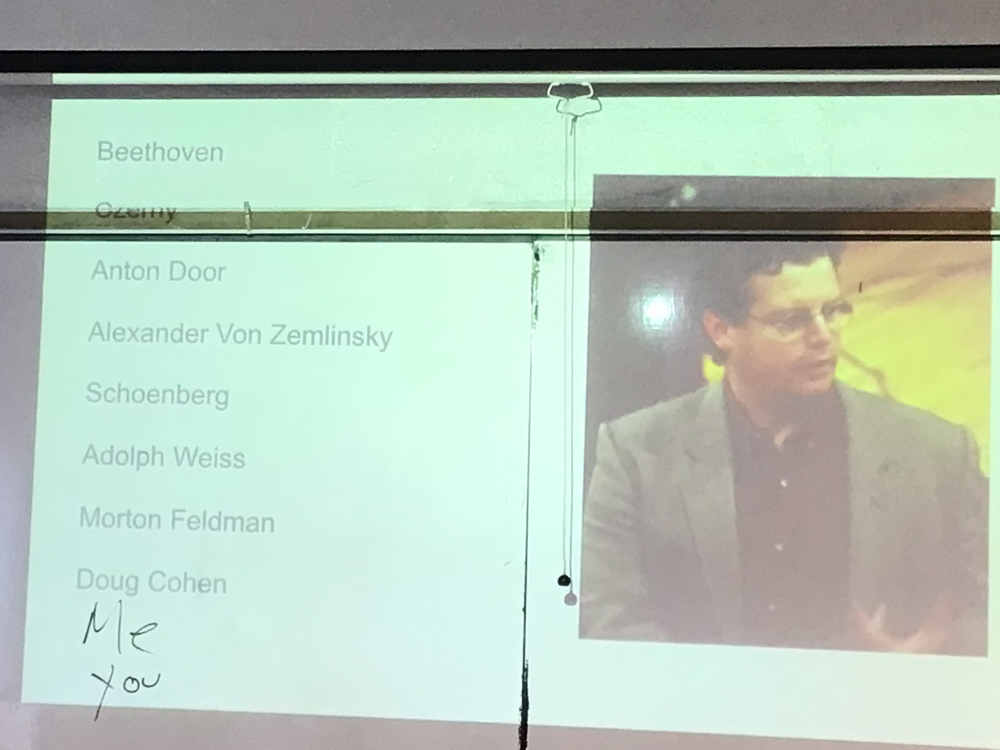

🌟 Dear BXX, Welcome to the BC Theatre! 🎭✨
🎉 Please take a moment to read the following: 🎉
📝 Dear Professor LXX,
💀 I have dropped the class, which now has 0 students. Feel free to give everyone a 0. 🙂
🌸 If this message feels too harsh, then please help me improvise an excuse.🤡
Thank you for understanding, and best wishes!
🎹✨ Here is our Plan B! ✨🎹
🌟 After I play one note on the piano, I will kindly take my leave. Please read the following: 🌟
📝 Dear Professor LXX,
🎶 I have fulfilled your requirement of attending and playing in the concert. Thank you very much for this opportunity! 🎵💀
🌸 Wishing you and your class all the best in future performances! 🌸
🌟✨ Here is Plan C! ✨🌟
🕵️♂️ Dear BXX,
🤫 OMG Please keep Plan A and Plan B top secret! 🤐
💡 It's unnecessary now—everything has gone back to normal. 😔
🎉 Thank you so much for participating; you are the best! 🏆🙂
🌸 Wishing you a wonderful day! 🌸
📸 This picture is from Professor Shane's MUS104 class, where he encouraged everyone to love music regardless of their majors.
🎼 Professor Cohen later proved to be the most helpful mentor for my degree. That’s why I insist: even if the theatre has a better union, a better platform such as Composer Now, or even if you bring Obama in, I will neither dress differently nor speak differently for the so-called “better audiences.”
🎭 My Plan X is to embrace reverse portraiture—it doesn’t matter how many people laugh at me. Let’s badmouth Beethoven all the way to Morton Feldman, and then highlight Professor Shane and Professor Cohen.
😅 I really dislike what I call “shame avant-garde,” but since shame is a strong word, I’ve replaced it with “avant trends-garde.” However, I hope you become a genuine avant-garde artist or the one you aspire to be. Even if not like my favorite, Stockhausen, at least be like Professor Cohen. 🙂 Then, 🌟 as an avant trad, I wish you good luck! 🙂
